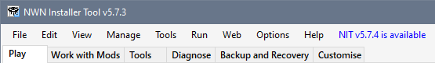
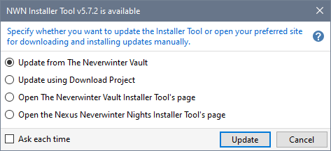
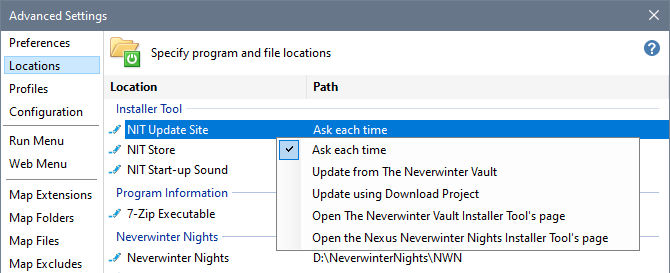

The Installer Tool lets you know when a newer version of the Tool is available by displaying an additional item on the Menu Bar.

Clicking NIT Available displays a dialogue you can use to specify how you want to deal with the newer version of the Installer Tool.

|
Update from The Neverwinter Vault |
Use this option when you want to delete or manually manage the downloaded 7-Zip file after successful installation. The 7-Zip file is saved in the Downloads Folder specified on the Locations page in Advanced Settings (usually DriveLetter:\Users\YourUserName\Downloads). |
|
Update using Download Project |
Use this option when you want to use the Installer Tool to store downloaded 7-Zip files. The 7-Zip file is saved in the Installer Tool's Mod Folder _Downloads directory created by Download Project, which automatically performs the download and installation without requiring any user intervention. |
|
Open The Neverwinter Vault Installer Tool's page |
Use this option when you want to download and install manually from the Installer Tool's The Neverwinter Vault web page. |
|
Open the Nexus Neverwinter Nights Installer Tool's page |
Use this option when you want to download and install manually from the Installer Tool's Nexus Neverwinter Nights web page. |
The Installer Tool remembers which option you selected and performs the same action next time you click NIT Available without displaying the dialogue.
If you want the Tool to display the dialogue next time you click NIT Available, tick or check the Ask each time box before pressing Update or Open.
You can change the action taken at any time by changing the NIT Update Site on the Locations page in Advanced Settings.

|
Update |
The Update button is shown when one of the Update options is selected.
|
|
Open |
The Open button is shown when one of the Open options is selected. Uses your browser to display the Installer Tool's web page specified by the option selected. |
|
Cancel |
Closes the dialogue without taking any action or saving the option selected. |